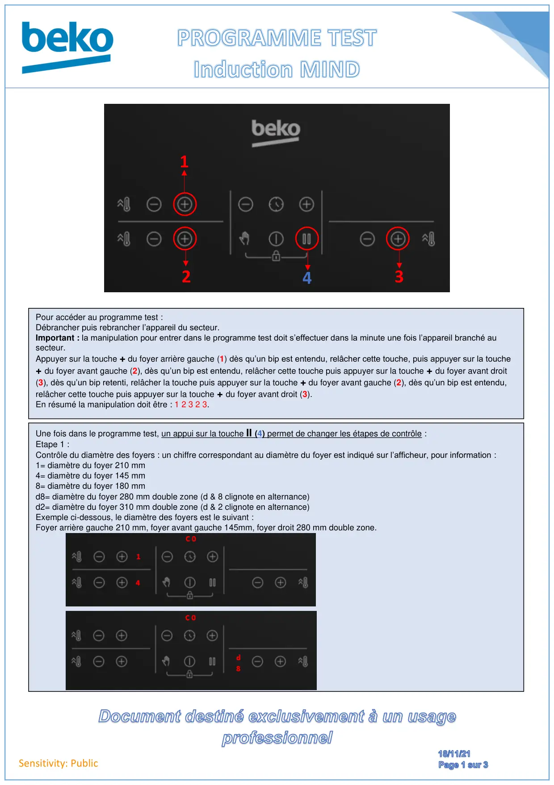
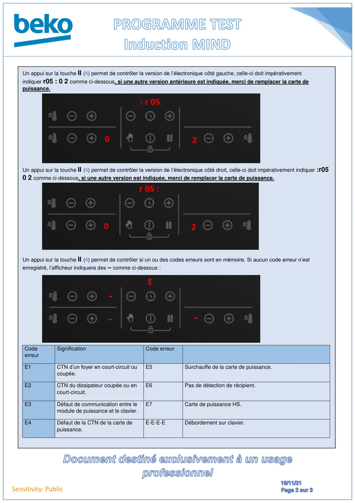
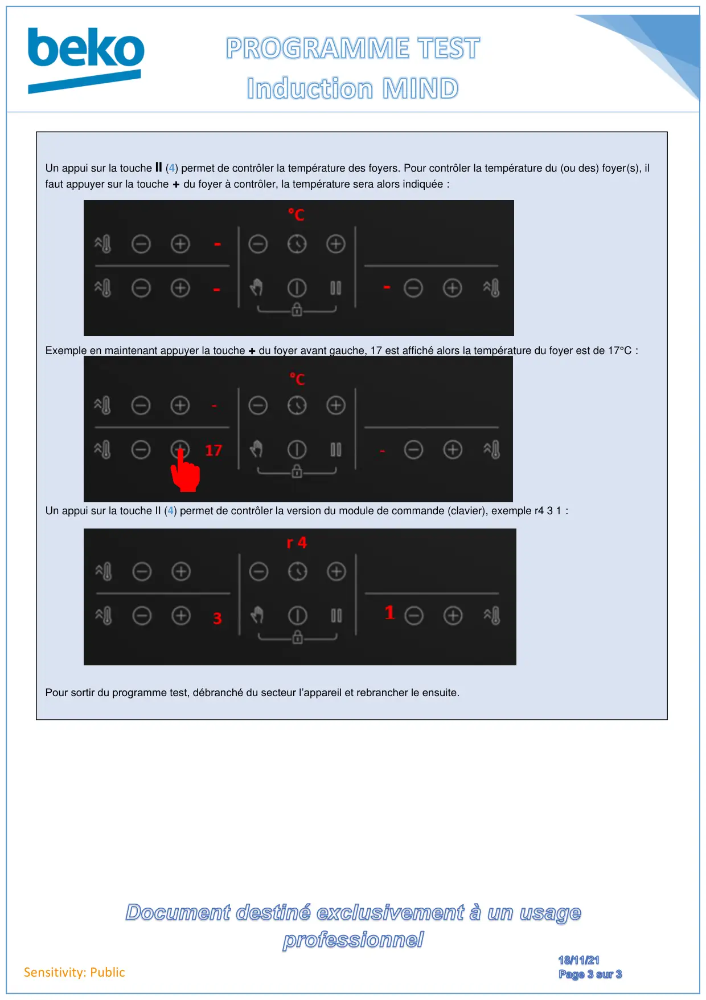

Prog Test Induction Mind

Sensitivity: PublicPour accéder au programme test :Débrancher puis rebrancher l’appareil du secteur.Important : la manipulation pour entrer dans le programme test doit s’effectuer dans la minute une fois l’appareil branché ausecteur.Appuyer sur la touche + du foyer arrière gauche (1) dès qu’un bip est entendu, relâcher cette touche, puis appuyer sur la touche+ du foyer avant gauche (2), dès qu’un bip est entendu, relâcher cette touche puis appuyer sur la touche + du foyer avant droit(3), dès qu’un bip retenti, relâcher la touche puis appuyer sur la touche + du foyer avant gauche (2), dès qu’un bip est entendu,relâcher cette touche puis appuyer sur la touche + du foyer avant droit (3).En résumé la manipulation doit être : 1 2 3 2 3.123Une fois dans le programme test, un appui sur la touche II (4) permet de changer les étapes de contrôle :Etape 1 :Contrôle du diamètre des foyers : un chiffre correspondant au diamètre du foyer est indiqué sur l’afficheur, pour information :1= diamètre du foyer 210 mm4= diamètre du foyer 145 mm8= diamètre du foyer 180 mmd8= diamètre du foyer 280 mm double zone (d & 8 clignote en alternance)d2= diamètre du foyer 310 mm double zone (d & 2 clignote en alternance)Exemple ci-dessous, le diamètre des foyers est le suivant :Foyer arrière gauche 210 mm, foyer avant gauche 145mm, foyer droit 280 mm double zone.4
1 / 3
Sensitivity: PublicUn appui sur la touche II (4) permet de contrôler la version de l’électronique côté gauche, celle-ci doit impérativementindiquer r05 : 0 2 comme ci-dessous, si une autre version antérieure est indiquée, merci de remplacer la carte depuissance.Un appui sur la touche II (4) permet de contrôler la version de l’électronique côté droit, celle-ci doit impérativement indiquer :r050 2 comme ci-dessous, si une autre version est indiquée, merci de remplacer la carte de puissance.Un appui sur la touche II (4) permet de contrôler si un ou des codes erreurs sont en mémoire. Si aucun code erreur n’estenregistré, l’afficheur indiquera des – comme ci-dessous :CodeerreurSignificationCode erreurE1CTN d’un foyer en court-circuit oucoupée.E5Surchauffe de la carte de puissance.E2CTN du dissipateur coupée ou encourt-circuit.E6Pas de détection de récipient.E3Défaut de communication entre lemodule de puissance et le clavier.E7Carte de puissance HS.E4Défaut de la CTN de la carte depuissance.E-E-E-EDébordement sur clavier.
2 / 3
Sensitivity: PublicUn appui sur la touche II (4) permet de contrôler la température des foyers. Pour contrôler la température du (ou des) foyer(s), ilfaut appuyer sur la touche + du foyer à contrôler, la température sera alors indiquée :Exemple en maintenant appuyer la touche + du foyer avant gauche, 17 est affiché alors la température du foyer est de 17°C :Un appui sur la touche II (4) permet de contrôler la version du module de commande (clavier), exemple r4 3 1 :Pour sortir du programme test, débranché du secteur l’appareil et rebrancher le ensuite.
3 / 3